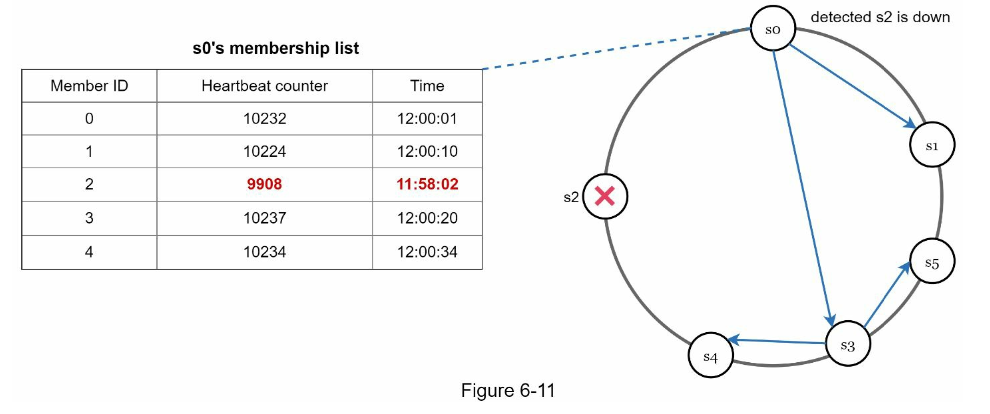

..
📗 Gossip Protocol

Основная идея: в системе есть набор узлов. Для каждого из них определен список ‘соседей’, с которыми они деляется информацией. Тем самым, данные распространяются по системе и в итоге обеспечивается eventual consistency.
- децентрализованный подход
- асинхронный госсип
- выбор соседей - рандомный
Плюсы:
- нет мастер ноды -> все классно скейлится
- норм отказоустойчивость
- обеспечивает eventual consistency
- низкий оверхед
Gossip-протокол для failure detection

Каждый узел следит за здоровьем своих соседей через табличку. Данные в таких табличках обновляются посредством госсип-протокола: периодически каждый узел рассылает уведомления соседям, что он жив (heartbeat), и данные в их табличках обновляются. Если же обновления перестают приходить, узел считается подозрительным. Если его подозрительность подтвердится и другими узлами, то он “выключается”
(alive → suspect → dead)